المجال المفاهيمي: التعامل مع بيئة الحاسوب<br>
المدة المقترحة: 4 ساعات<br>
السنة: الأولى ثانوي
في الدرس السابق، تعرّفنا تكنولوجيا الإعلام والاتصال وفوائدها ومساوئها، ورأينا مثالاً عن تلميذ يرسل ملفاً إلى أستاذه. لكن كيف انتقل الملف من أفكار التلميذ إلى الحاسوب؟ كيف كُتب وحُفظ، ثم ظهر على شاشة الأستاذ أو وصل إليه عبر الشبكة؟
اقرأ الرسم: يكتب التلميذ الملف ويحفظه، ثم ينتقل عبر الشبكة إلى الأستاذ. ناقشوا: ما الجهاز الذي أدخل به التلميذ البيانات؟ أين حفظ الملف؟ ما الوسيلة التي سمحت بإرساله؟
تأمل حاسوب المخبر: صندوق، شاشة، لوحة مفاتيح، فأرة وكبلات. ما دور كل جزء في إنجاز عملية: كتابة ملف → معالجته → حفظه → إرساله أو عرضه؟
تكنولوجيا الإعلام والاتصال تسمح بتبادل المعلومات، لكن الحاسوب هو الأداة التي تستقبل البيانات وتعالجها وتحفظها وتعرضها. لذلك سننتقل من المفاهيم التي درسناها سابقاً إلى معرفة المكوّنات المادية التي تجعل هذه العمليات ممكنة.
البيانات → المعالجة → المعلومات
│
↓
الحاسوب ومكوّناته
في نهاية الوحدة، يكون المتعلم قادراً على أن:
| الحصة | المحتوى | الأثر المنتظر |
|---|---|---|
| 1 | تعريف الحاسوب، أنواعه، ووحدات الإدخال والإخراج | تصنيف أجهزة حقيقية أو بطاقات |
| 2 | الصندوق والمكونات الداخلية والذاكرة | بطاقة وظيفة لكل مكوّن |
| 3 | التخزين، تمثيل المعلومات، والمنافذ | تحويلات بسيطة ومطابقة كبل بمنفذ |
| 4 | خطوات التجميع والتوصيل والتقويم | مخطط تركيب آمن أو محاكاة |
الحاسوب جهاز إلكتروني يستقبل البيانات، ويعالجها وفق تعليمات البرامج، ثم يحفظ النتائج أو يعرضها ليستفيد منها المستخدم. لا يقتصر معنى الحاسوب على الصندوق الموجود تحت الطاولة؛ فالحاسوب منظومة تضم أجهزة طرفية ومكوّنات داخلية وبرامج.
| النوع | وصفه | مثال استعمال |
|---|---|---|
| حاسوب مكتبي | أجزاء منفصلة غالباً: صندوق وشاشة ولوحة مفاتيح | المخبر، الإدارة، المنزل |
| حاسوب محمول | شاشة ولوحة مفاتيح ولوحة لمس مدمجة | الدراسة والتنقل |
| جهاز لوحي أو هاتف ذكي | شاشة لمس ومكونات مدمجة | القراءة، الاتصال، التطبيقات |
| خادم | حاسوب مخصص لخدمة أجهزة أو مستخدمين آخرين | تخزين ملفات المؤسسة أو مواقع الويب |
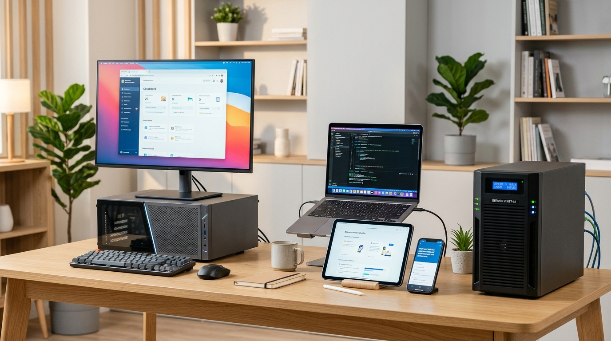
اقرأ الصورة: حدّد الحاسوب المكتبي، والحاسوب المحمول، والجهاز اللوحي أو الهاتف، والخادم. لا يلزم أن تشبه أجهزة المخبر تماماً؛ المقصود المقارنة بين وظائفها ودرجة سهولة نقلها.
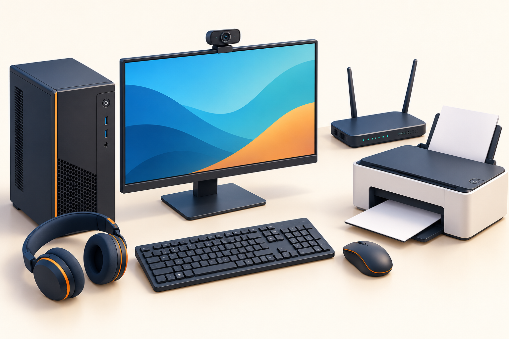
يمكن تبسيط عمل الحاسوب في أربع عمليات مترابطة:
إدخال البيانات ← معالجة البيانات ← حفظها عند الحاجة ← إخراج النتيجة
مثال: يكتب التلميذ فقرة بلوحة المفاتيح (إدخال)، يعالجها برنامج معالج النصوص (معالجة)، يحفظها في ملف (تخزين)، ثم تظهر على الشاشة أو تطبع (إخراج). وإذا أرسلها إلى الأستاذ، تستعمل منظومة الحاسوب أيضاً وسيلة اتصال بالشبكة.
الأجهزة الطرفية هي الأجهزة التي نتعامل معها خارج الصندوق أو تتصل به. قد تكون سلكية أو لاسلكية، ولكن وظيفتها هي الأساس في تصنيفها.
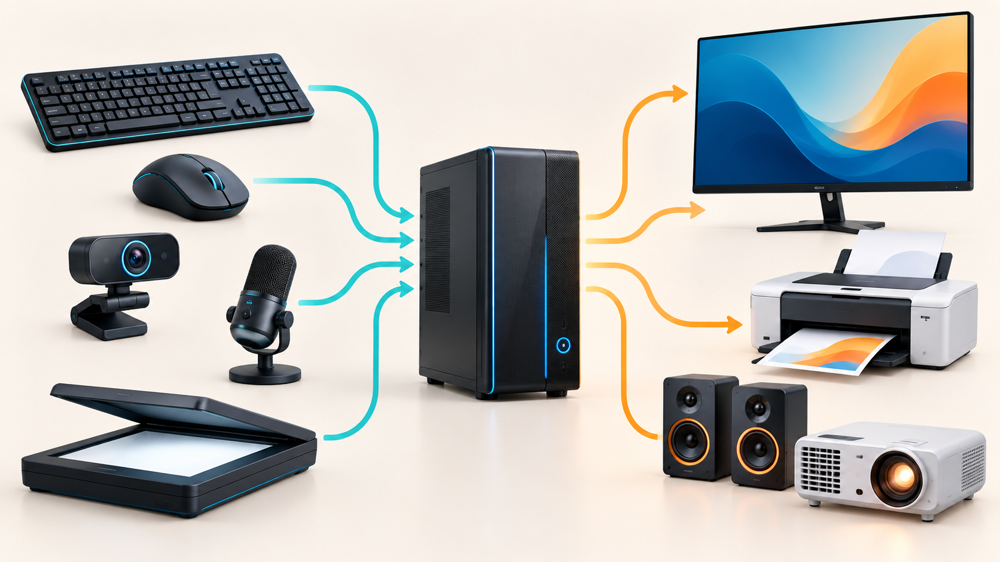
اقرأ الرسم: الأسهم الزرقاء تمثل انتقال البيانات من أجهزة الإدخال إلى الحاسوب، والأسهم البرتقالية تمثل انتقال النتائج من الحاسوب إلى أجهزة الإخراج. الماسح الضوئي في الأسفل يساراً يدخل الوثائق والصور، وجهاز العرض في الأسفل يميناً يعرض محتوى الحاسوب للقسم.
تدخل البيانات أو الأوامر إلى الحاسوب.
| الجهاز | ماذا يدخل؟ | مثال استعمال |
|---|---|---|
| لوحة المفاتيح | حروف وأرقام ورموز | كتابة تقرير أو كلمة مرور |
| الفأرة أو لوحة اللمس | حركة ونقر واختيار | فتح برنامج أو تحريك عنصر |
| الميكروفون | صوت | تسجيل شرح أو مكالمة |
| كاميرا الويب | صورة وفيديو | قسم افتراضي أو اجتماع |
| الماسح الضوئي | صورة وثيقة ورقية | تحويل وثيقة إلى ملف رقمي |
| قارئ الرموز الشريطية | رقم أو رمز منتج | المتاجر والمكتبات |
الفأرة الحديثة: غالباً فأرة ضوئية أو لاسلكية؛ لا تحتاج إلى كرة ميكانيكية كما في بعض الأجهزة القديمة. يجب عدم الخلط بين شكل الاتصال (USB أو Bluetooth) ووظيفتها: وظيفتها إدخال.
تعرض نتائج المعالجة للمستخدم.
| الجهاز | نوع النتيجة | ملاحظة |
|---|---|---|
| الشاشة | نص وصور وفيديو | جهاز إخراج، وقد تكون لمساً أيضاً |
| الطابعة | وثيقة ورقية | إخراج مادي للملف |
| السماعات أو سماعة الرأس | صوت | تستعمل للتعلم الفردي أو العروض |
| جهاز العرض | صورة مكبرة | يعرض محتوى الحاسوب للقسم |
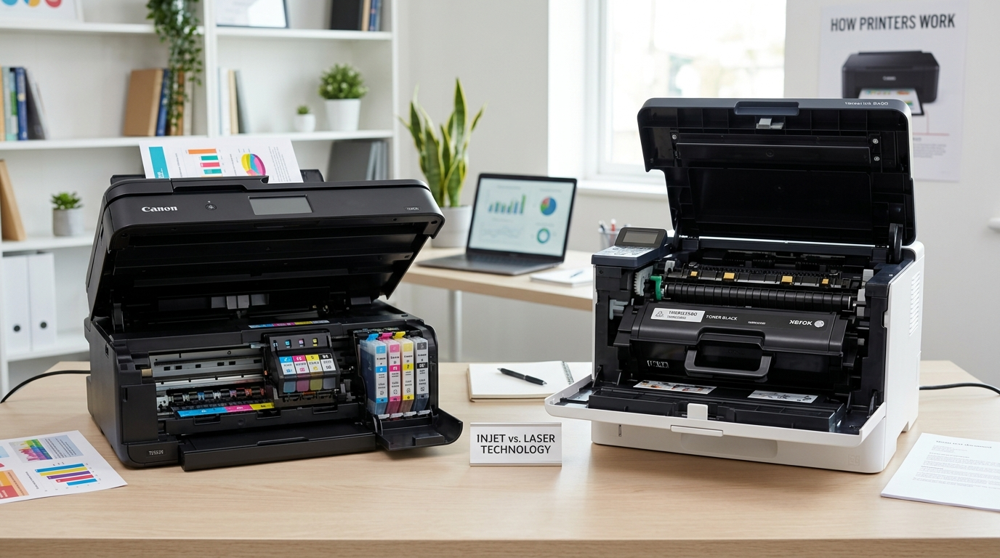
مثال من أجهزة الإخراج: تنتج الطابعات وثيقة ورقية. قد تستعمل الطابعة النافثة للحبر خراطيش حبر، بينما تستعمل طابعة الليزر مسحوق حبر (Toner). لا نفتح الطابعة في المخبر إلا بإذن الأستاذ.
بعض الأجهزة تؤدي الوظيفتين معاً. شاشة اللمس تعرض المعلومات (إخراج) وتستقبل اللمس (إدخال). وسائط التخزين، مثل ذاكرة USB، تستقبل الملفات عند النسخ إليها وتعيد إرسالها عند فتحها.
صنّف العناصر الآتية في جدول: كاميرا ويب، طابعة، شاشة لمس، سماعات، ذاكرة USB، لوحة مفاتيح، جهاز عرض. اكتب سبباً قصيراً لكل تصنيف.
يسمى الصندوق أحياناً الهيكل (Case / Boîtier). يحمي المكونات الداخلية وينظم تثبيتها وتهويتها، لكنه ليس المعالج ولا «الوحدة المركزية» وحده. قبل فتحه: أطفئ الجهاز، افصل كبل الكهرباء، ولا تعمل إلا بإذن الأستاذ.
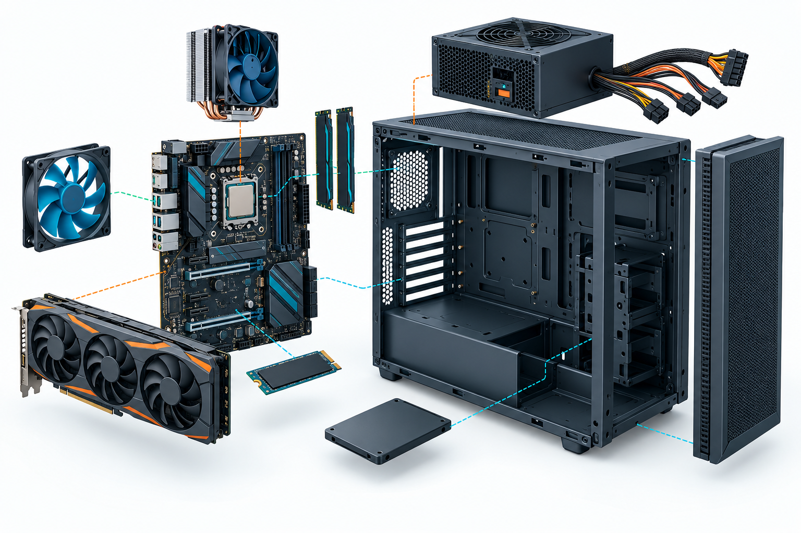
اللوحة الأم (Motherboard / Carte mère) هي اللوحة الإلكترونية الرئيسة التي تصل المكونات ببعضها. عليها مقبس المعالج، وفتحات RAM، وموصلات التخزين، ومنافذ التوسعة، ومنافذ الاتصال الخارجية.
لا يلزم حفظ أسماء كل الشقوق التقنية، لكن يجب فهم المبدأ: المكوّن لا يعمل بمعزل عن بقية الأجزاء؛ اللوحة الأم تنسق الاتصال بينها.
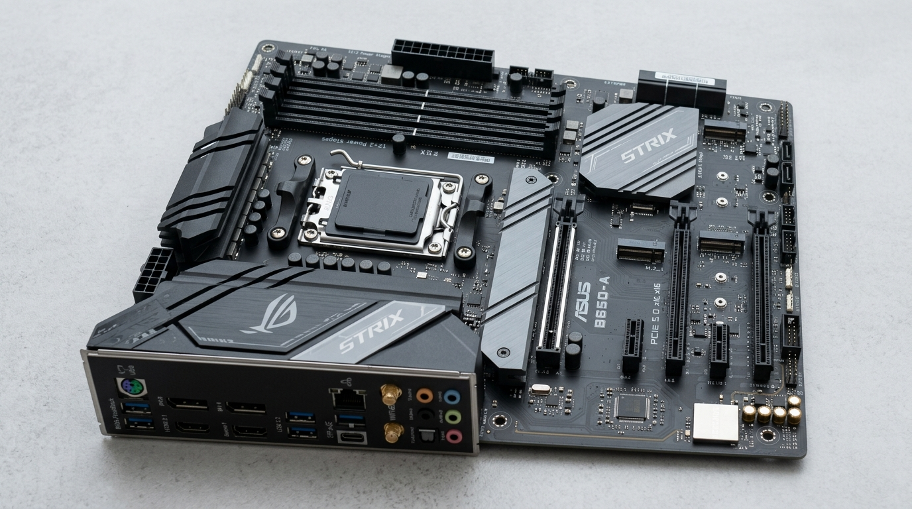
تعرّف في الصورة: مقبس المعالج، شقوق RAM الطويلة، فتحة بطاقة التوسعة، وموضع تثبيت SSD من نوع M.2. الأسماء المكتوبة على بعض اللوحات تخص الشركة المصنعة، وليست مصطلحات يجب حفظها.
وحدة المعالجة المركزية (CPU / Processeur) تنفذ التعليمات الحسابية والمنطقية التي تطلبها البرامج. ليس معنى ذلك أن كل مهمة يقاس نجاحها بسرعة GHz فقط؛ الأداء يتأثر أيضاً بعدد الأنوية والذاكرة وسرعة التخزين والبرنامج المستعمل.
يُثبّت فوق المعالج مشتت حراري ومروحة أو نظام تبريد مناسب. التبريد ضروري لأن المعالجة تولد حرارة. لا نشغّل حاسوباً بعد فك المبرد، ولا نلمس سطح المكوّنات الساخنة.
| وجه المقارنة | الذاكرة العشوائية RAM | ذاكرة البرنامج الثابت ROM/UEFI |
|---|---|---|
| الدور | مساحة عمل للبرامج والملفات المفتوحة | تخزين تعليمات بدء تشغيل الجهاز وإعداداته الأساسية |
| عند انقطاع الكهرباء | تفقد محتواها | لا تفقد التعليمات المخزنة فيها عادة |
| مثال | فتح متصفح ومعالج نصوص في الوقت نفسه | فحص المكونات وبدء الإقلاع |
عند فتح ملف، تنقل نسخة منه مؤقتاً إلى RAM. عند الضغط على حفظ، يكتب الملف على وسيط التخزين الدائم. لذلك لا يعني وجود الملف في RAM أنه أصبح محفوظاً.
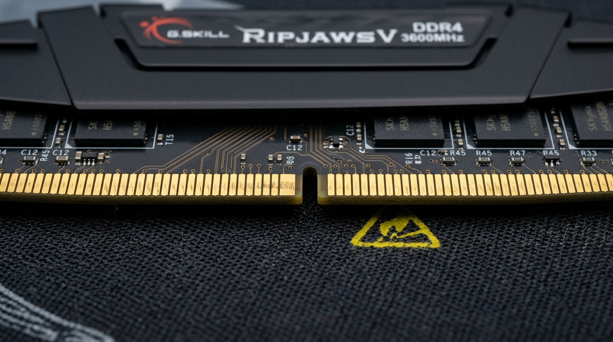
ملاحظة عملية: يحدد الشق التوجيهي اتجاه تركيب شريحة RAM. لا نضغط على الشريحة بالقوة، ولا نلمس الأسنان الذهبية بلا حاجة.
مزود الطاقة (PSU / Alimentation) يحوّل كهرباء المأخذ إلى طاقة مناسبة لمكونات الحاسوب. لا نفتح مزود الطاقة ولا نفك براغيه في المخبر؛ يحتفظ بأجزاء كهربائية حساسة حتى بعد الفصل.
قد يحتوي الحاسوب على بطاقات توسعة، مثل بطاقة رسوميات (GPU) أو بطاقة شبكة. في بعض الأجهزة تكون وظائف الرسوميات أو الشبكة مدمجة في اللوحة الأم أو المعالج، لذلك ليست كل القطع المنفصلة موجودة في كل حاسوب.
وسيط التخزين يحفظ نظام التشغيل والبرامج والملفات بعد إيقاف الحاسوب.
| الوسيط | الفكرة | ميزة وحدّ |
|---|---|---|
| HDD | أقراص ميكانيكية تدور داخل الجهاز | سعة كبيرة غالباً، لكنه أبطأ وحساس للصدمات |
| SSD SATA | ذاكرة إلكترونية في غلاف يشبه القرص | سريع وهادئ ولا أجزاء متحركة فيه |
| SSD M.2 NVMe | بطاقة صغيرة تثبّت على اللوحة الأم | سريع جداً وشائع في الأجهزة الحديثة |
| ذاكرة USB | وسيط متحرك | سهل النقل، لكنه ليس بديلاً آمناً وحيداً للنسخ الاحتياطي |
| قرص خارجي | HDD أو SSD في غلاف خارجي | مناسب للنسخ الاحتياطي والنقل |
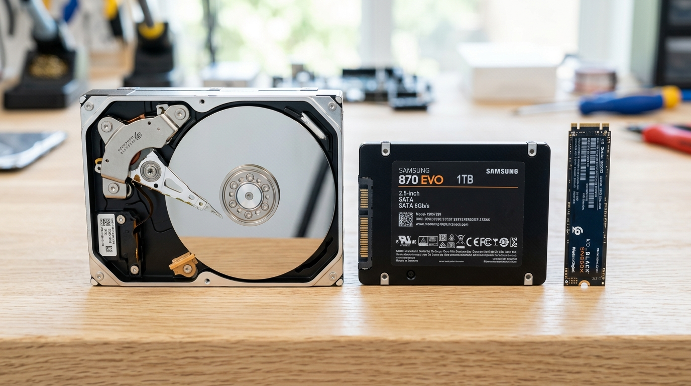
اقرأ الصورة من اليسار إلى اليمين: HDD ميكانيكي، ثم SSD SATA، ثم SSD M.2 NVMe. اختلاف الشكل لا يعني اختلاف السعة فقط؛ إذ تختلف أيضاً السرعة وطريقة التوصيل.
الأقراص البصرية مثل CD وDVD جزء من تاريخ التخزين الرقمي وقد توجد في أرشيفات أو أجهزة قديمة، لكنها نادرة في الحواسيب الجديدة. لا نستخدمها مثالاً رئيساً على تجهيز مخبر حديث.
أصغر وحدة للمعلومة هي البت (bit) وقيمته 0 أو 1. ثمانية بتات تكوّن بايتاً (Byte / Octet).
| الوحدة | العلاقة التعليمية المبسطة |
|---|---|
| 1 B | 8 bits |
| 1 KB | 1024 B |
| 1 MB | 1024 KB |
| 1 GB | 1024 MB |
| 1 TB | 1024 GB |
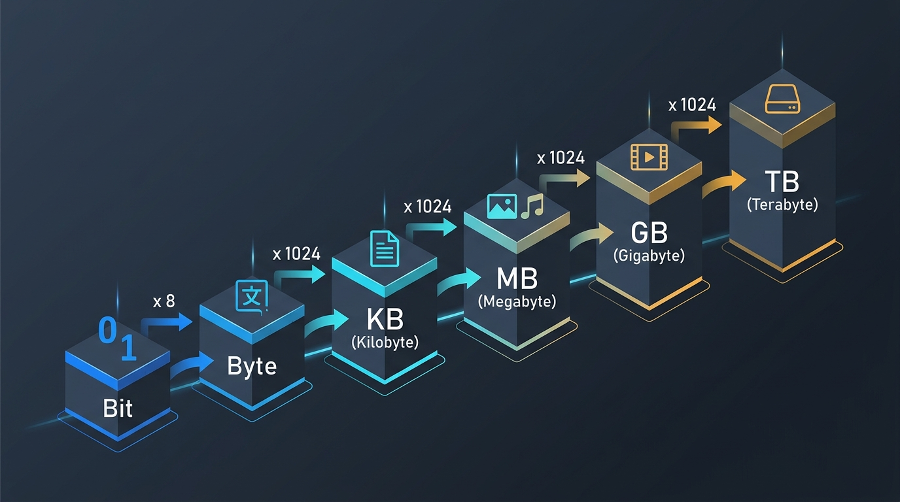
اقرأ السلم: 8 bits تكوّن Byte واحداً، ثم ننتقل بين الوحدات في هذا الدرس بالضرب أو القسمة في 1024. استعمل الصورة للتحقق من اتجاه التحويل قبل إجراء الحساب.
قد ترى في متاجر الأجهزة كتابة KB وMB وGB وTB بطريقة عشرية، بينما يستعمل نظام التشغيل أحياناً مضاعفات ثنائية. في هذه الوحدة نستعمل التحويل بـ1024 لفهم التدرج.
مثال: حوّل 3 GB إلى MB: 3 × 1024 = 3072 MB.
تعالج الدوائر الإلكترونية حالتين كهربائيتين يمكن تمثيلهما بـ0 و1. تسمى هذه الطريقة النظام الثنائي. النصوص والصور والصوت كلها تحول داخل الحاسوب إلى سلاسل من البتات، ثم تفسرها البرامج لتظهر لنا بشكل مفهوم.
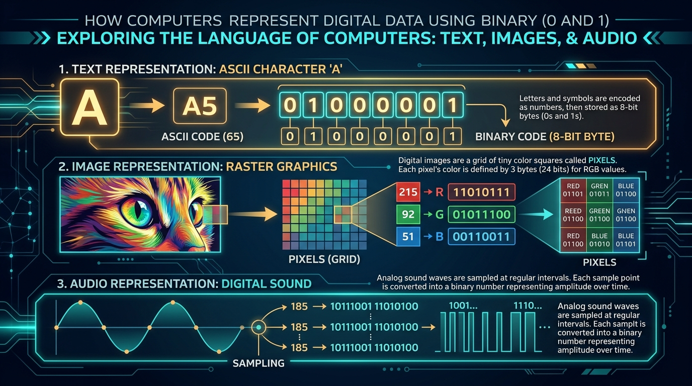
فكرة الصورة: لا يلزم حفظ الرموز أو الحسابات التفصيلية فيها؛ لاحظ فقط أن النص والصورة والصوت يمكن تحويلها إلى 0 و1 لكي يعالجها الحاسوب.
لا يحتاج التلميذ في هذه المرحلة إلى حفظ ترميز كل حرف؛ المهم أن يدرك أن الملفات المختلفة تخزن في النهاية كمعلومات رقمية.
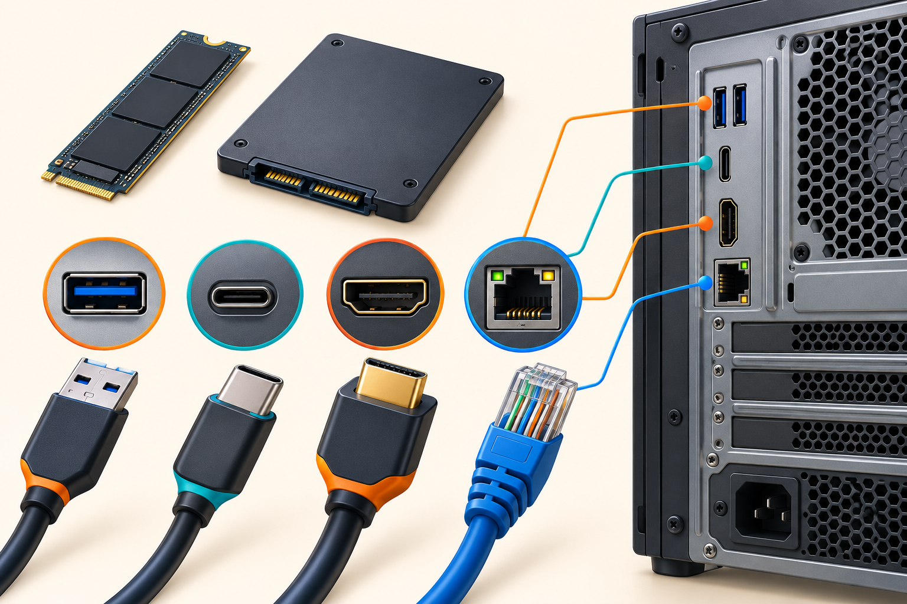
توجد منافذ في الواجهة الأمامية والخلفية للصندوق. لا يكفي أن يبدو الكبل مشابهاً؛ نتأكد من اسم المنفذ وشكله واتجاهه قبل التوصيل.
| المنفذ | استعماله الشائع | تنبيه |
|---|---|---|
| USB-A | لوحة مفاتيح، فأرة، ذاكرة USB، طابعة | لا ندخل القابس بالقوة |
| USB-C | هاتف أو جهاز حديث؛ قد ينقل بيانات أو طاقة أو صورة | الوظائف تختلف باختلاف الجهاز والكبل |
| HDMI | شاشة أو جهاز عرض | ينقل الصورة، وقد ينقل الصوت أيضاً |
| RJ45 (Ethernet) | شبكة سلكية وكبل إنترنت | ليس منفذ هاتف ولا USB |
| مقبس صوت 3.5 mm | سماعة أو ميكروفون في أجهزة معينة | نتحقق من رمز المنفذ |
قد ترى منافذ قديمة، مثل VGA أو PS/2، في أجهزة محفوظة أو قديمة. نعرفها حتى لا نفاجأ بها، لكن تجهيزات المخبر الحديثة تعتمد غالباً USB وHDMI والشبكة السلكية أو اللاسلكية.
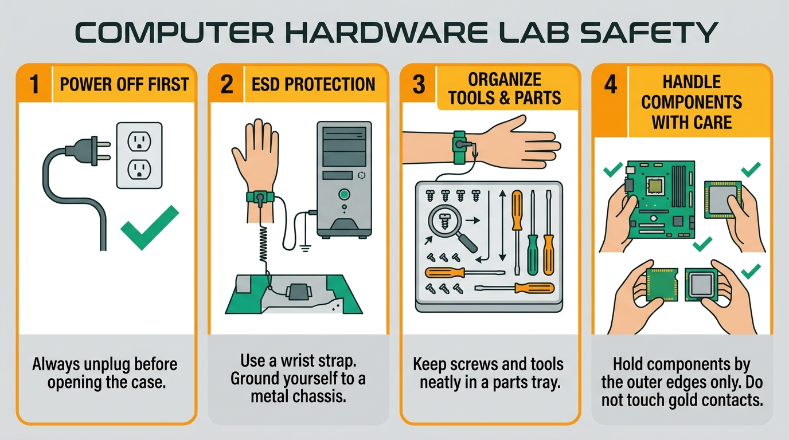
اقرأ الرموز قبل البدء: افصل الكهرباء، نظّم البراغي والأدوات، واحمل القطع من حوافها. سوار تفريغ الشحنة الساكنة وسيلة مهنية إضافية؛ في المخبر المدرسي لا تستعمله إلا إذا كان متوفراً وبإرشاد الأستاذ.
لا يُنفذ هذا الترتيب عملياً إلا تحت إشراف الأستاذ أو في محاكاة، لكنه يوضح منطق التجميع:
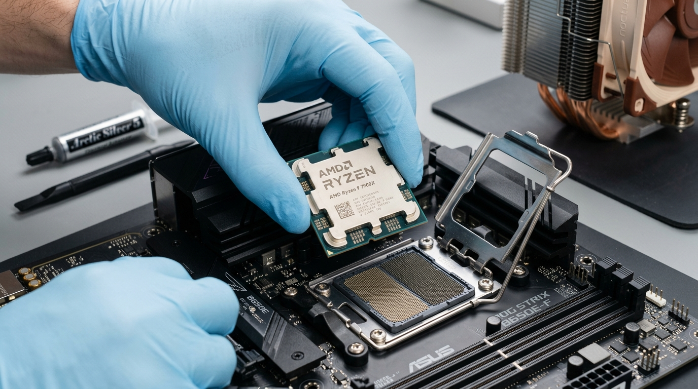
تنبيه: هذه الصورة للتعرف على اتجاه تركيب المعالج فقط. لا يركب التلاميذ المعالج فعلياً إلا تحت إشراف الأستاذ، لأنه جزء حساس ولا يجوز لمس دبابيسه أو الضغط عليه.
ملاحظة تعليمية: الهدف هنا فهم ترتيب العمل وقراءة مخطط التركيب، وليس تعريض تلاميذ مبتدئين لخطر تركيب جهاز المؤسسة دون إشراف.
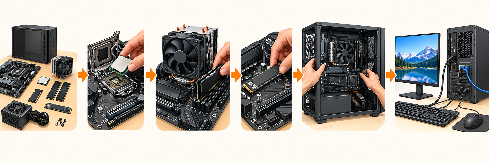
اقرأ المخطط من اليسار إلى اليمين: فحص القطع، تثبيت المعالج، تركيب التبريد وRAM، تثبيت SSD، تركيب المكونات داخل الهيكل، ثم توصيل الشاشة ولوحة المفاتيح والفأرة وكبل الشبكة. لا يظهر كبل الكهرباء في المخطط عمداً: يُوصل فقط في المرحلة الأخيرة وتحت إشراف الأستاذ.
العمل في مجموعات من 3 أو 4:
4096 ÷ 1024 = 4 GB.الحاسوب منظومة متكاملة: تدخل الأجهزة البيانات، يعالجها CPU مستعيناً بالذاكرة، تحفظ على وسائط التخزين، ثم تظهر النتيجة عبر أجهزة الإخراج. معرفة الوظائف والمنافذ وقواعد السلامة تجعل التجميع والتوصيل عملاً منظماً وآمناً، وتمهّد لفهم نظام التشغيل في الوحدة التالية.